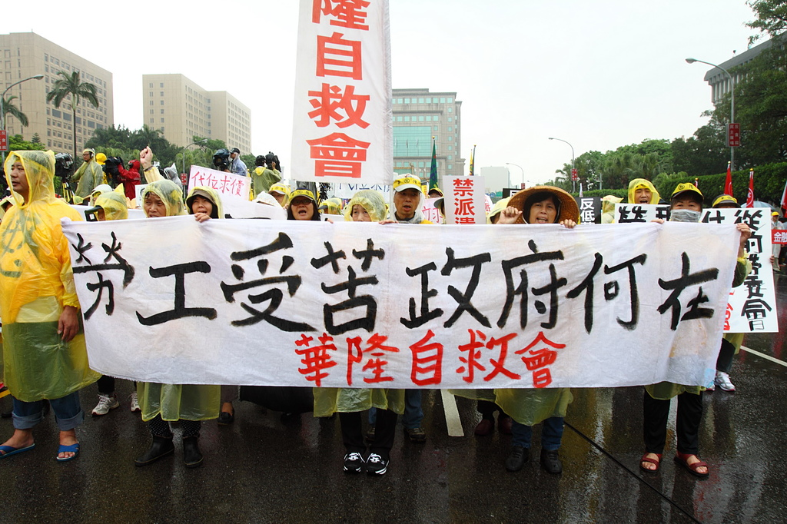
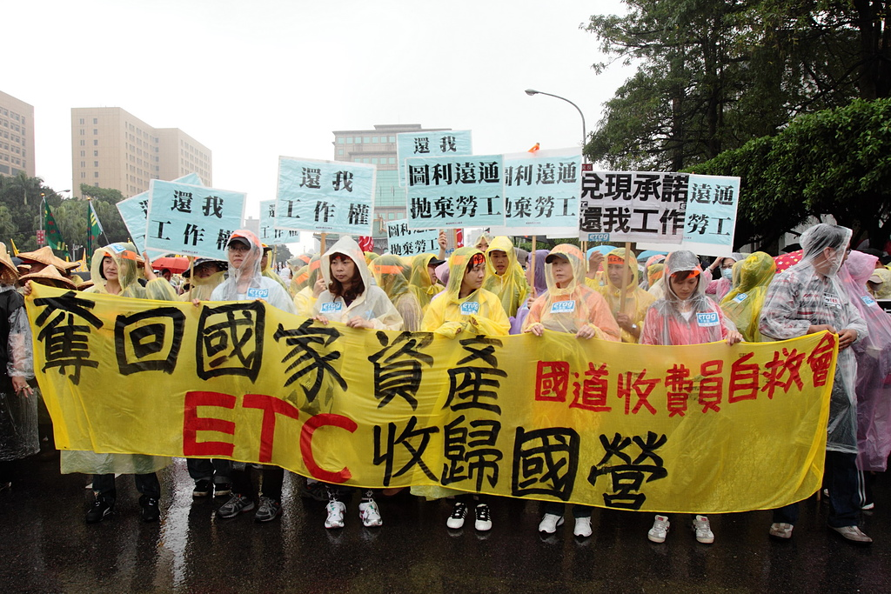
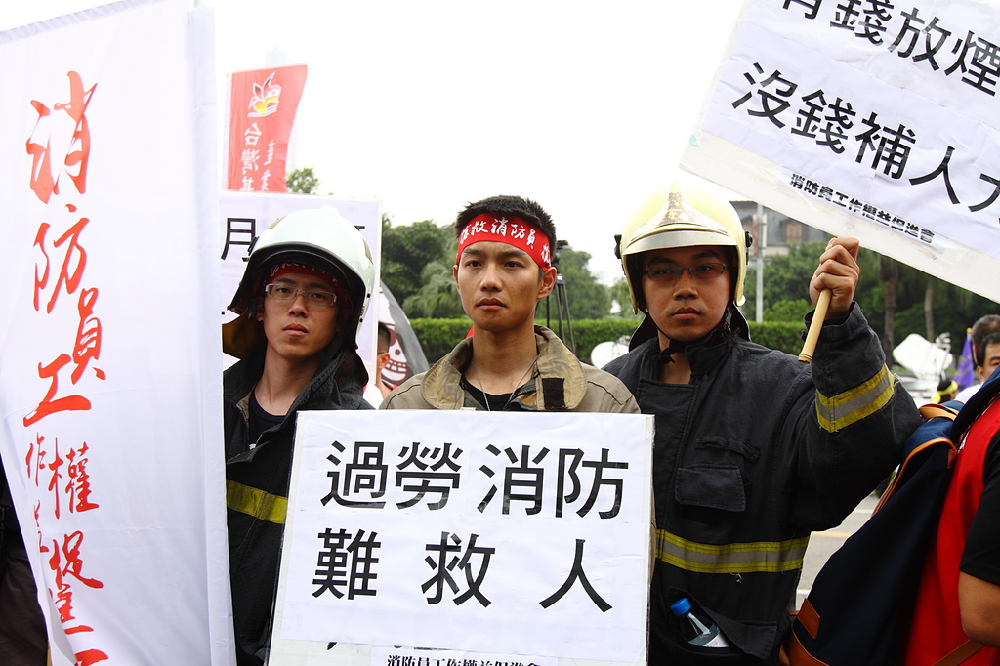
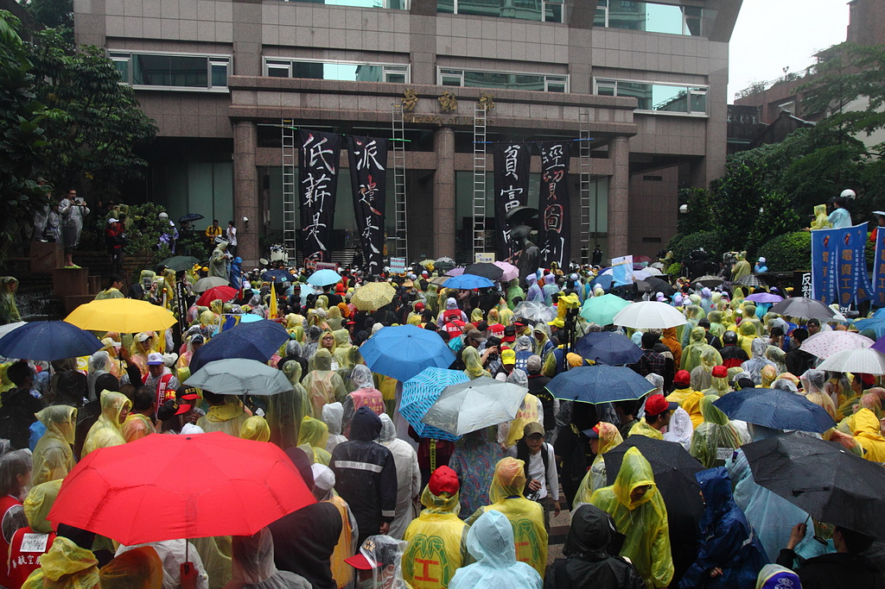
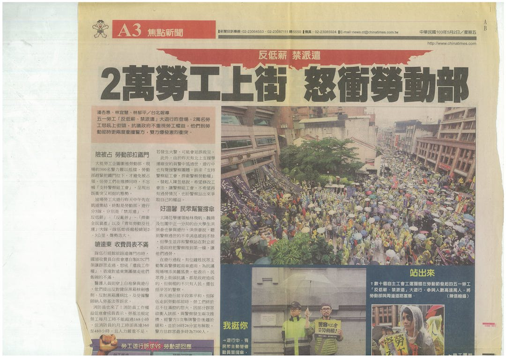
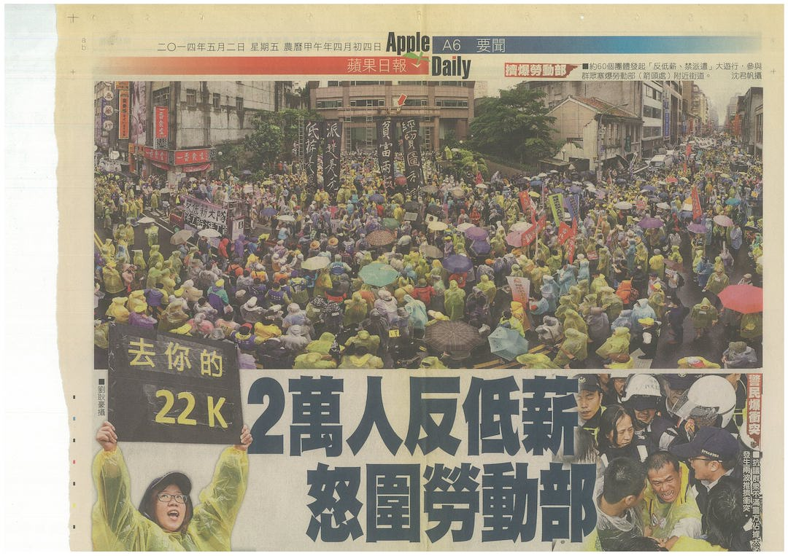

遭到華隆紡織翁大銘積欠退休金十餘年的華隆自救會，圖：張榮隆

遠通接手國道ETC電子收費後，失業而且未受妥當安置的國道收費員，也上街抗議約聘制度，圖：張榮隆

華航空服員，帶著象徵「紅眼航班」的眼球道具，訴求社會大眾看見空服員過勞問題，圖：張榮隆

消防員權益促進會走上街頭，訴求消防員組工會，圖：張榮隆

遊行隊伍將「低薪是國恥」、「派遣是元兇」、「貧富兩極化」、「經貿圖利誰」四面超過兩層樓高的幡旗搭在勞動部建物上，不過因為警方的阻擋，不讓群眾接近建築物而引發兩波推擠衝突，圖：張榮隆

警方已經在勞動部前戒備，而勞動部也拉下鐵門，嚴正以待，圖：張榮隆

